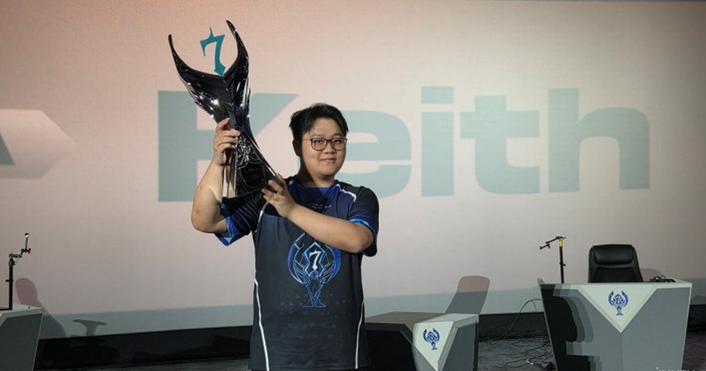

Keith runs the table undefeated to win the Epic Seven World Championship
The defending champion was supposed to repeat. Instead, Keith swept XiaoXuenai out of the winners' final, survived a seven-set Grand Final against OMEGA in Seoul, and left the Epic Seven World Championship 2026 without losing a single match all tournament.

Disclosure: this post contains affiliate links. I earn a commission on qualifying purchases.
Epic Seven has a new world champion, and he never gave the bracket a chance to touch him. Keith won the Epic Seven World Championship 2026 (E7WC 2026) on Saturday at the Lotte Cinema World Tower in Jamsil, Seoul, closing an undefeated run through the entire tournament with a Grand Final win over OMEGA inside the SUPER PLEX theater.
The sixth edition of the championship brought a two-and-a-half-month season to its end. The road started with online preliminaries on September 12 and ran through the Group Stage and Knockout Stage before three finalists — Keith, OMEGA, and defending champion XiaoXuenai — reached the offline finals in front of a sold-out crowd.
The champion goes out first
Most of the room expected a repeat. XiaoXuenai, the 2025 champion, was the favorite to go back-to-back — and Keith removed him from the winners' side in straight sets in the Winners' Final.
That sent the defending champion down to face OMEGA for the last Grand Final seat, and OMEGA finished the job there too. XiaoXuenai's title defense ended in third place, and the final became a rematch: Keith, who had already beaten OMEGA once in the Knockout Stage, against the one player who had fought all the way back through the losers' bracket.
A final that went the distance
The Grand Final delivered everything the sweep before it didn't. OMEGA, playing from behind all day, pushed Keith to the edge of a bracket reset — winning three of the first five sets and standing one set from forcing the decider.
Keith closed it instead. He took the sixth set behind a Diene draft he trusted on speed, then won the seventh and last set when his Mei Lin brought down OMEGA's main dealer, Haru, despite an elemental disadvantage — the moment Keith himself picked out afterwards as the one he will remember.
The title came with the championship ring, the trophy, and the winner's share of the prize pool. Second place went to OMEGA, and the winner also earns a hero skin created for a hero of his choice.
Five years from a dorm room to a world title
Keith's own story is the quiet part of this win. He first picked up Epic Seven at university during the COVID-19 pandemic and kept playing all the way through completing a master's degree — five years with the game before he ever lifted its biggest trophy.
His preparation for Saturday was just as single-minded: six to seven hours of practice a day in the build-up, and a final session the night before that ran until 3 a.m. After the sweep of the defending champion, he said, he finally believed the day was his — even if the Grand Final then made him prove it all over again.
Asked what comes next, his answer was simple: if he gets the chance, he will come back and win it again.
What else the finals crowd saw
The championship day doubled as a showcase for the game's future. Smilegate closed the event with a teaser pointing to the December 10 update, built around Kayron — the mastermind behind Episode 1 — revealing his true form as the Apostle of the End. The new champion's reign and the game's next chapter now start in the same week.
Sources: Keith Wins E7WC 2026 Undefeated to Crown Epic Seven's Ultimate Champion (Inven Global) · E7WC 2026 Winner 'Keith' interview (Inven Global) · Epic Seven Announces Finals for Global Esports Festival "E7WC 2026" (Smilegate via PR Newswire) · E7WC 2026 results (Epic7Tools)
Gear up: Razer — mice, keyboards, headsets and laptops.